绿色是Contour几何投影，不是真实像素金标准。紫色点是保守几何正patch；橙色点是20m内但距离目标Contour外扩2m之外的点。右侧仅当前RGB裁剪插值，不增加原生细节。
The brown car that is 3rd from the right in the 14th row of cars in the large parking lot behind the One Stop Building, when viewed aerially with the long side of the One Stop Building to the right
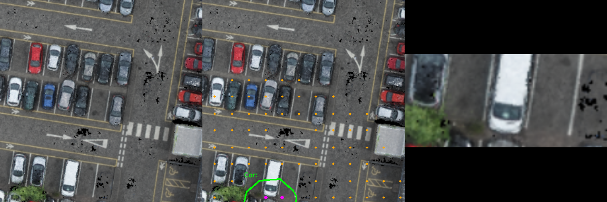
Between Combined Facility and St Andrew's Street Baptist Church, this white car is directly south of Combined Facility.
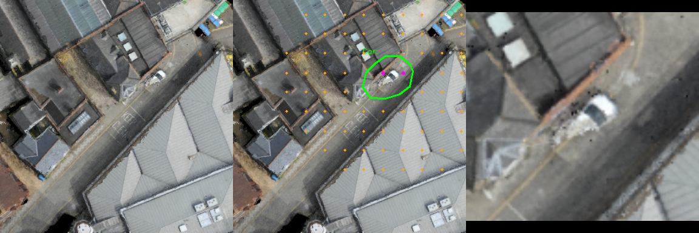
A boxy white car parked in the far left section, up near the entrance of the Grafton West raised parking area. It is between a red car and a silver car with a black roof and is across from the white stripped marked spaces.
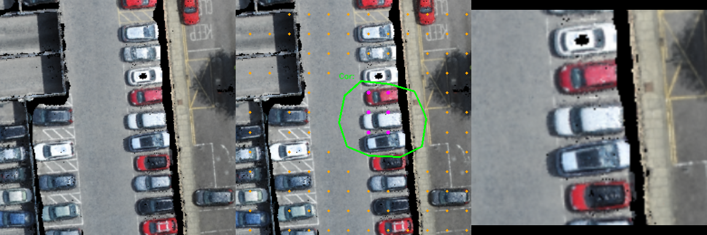
The C-shaped brown building in between the Anatomy school and the Geography building.
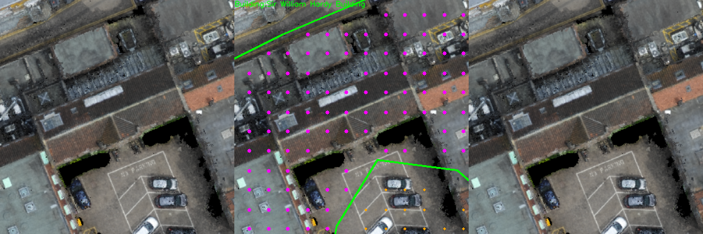
A multi-colored beige and white building that has a another section with a two-tiered brown cone shape for its roof, in between the Cambridge Union society building and the Pearce hostel on the corner of Bridge Street and Round Church Street
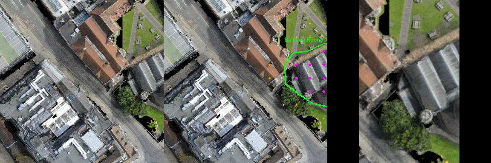
The brown and gray building between the River Cam and Richmond Terrace.
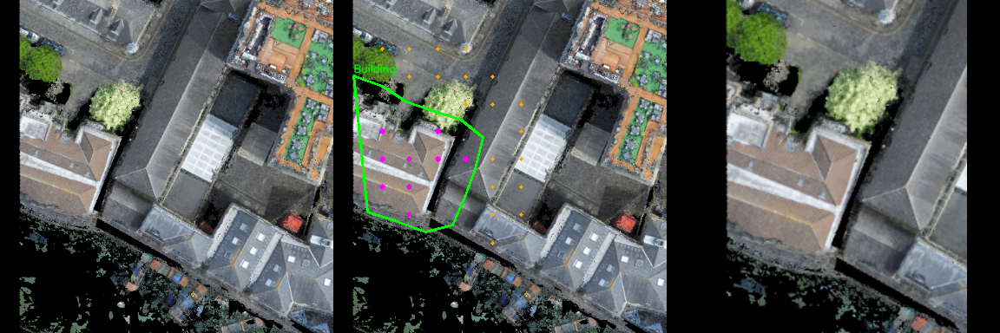
A parking lot with multiple multi-colored white, green and blue cars, and one black car in it, next to the Parkside police station against the edge of the map off warkworth Terrace
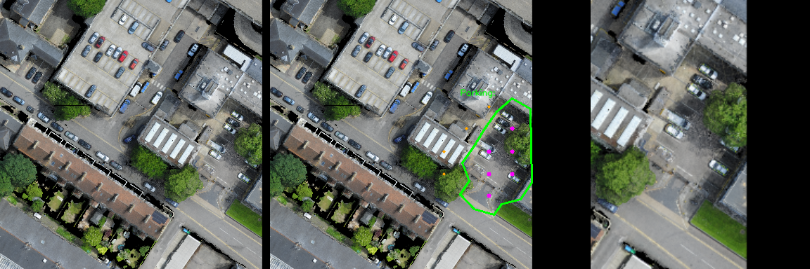
Parking area within a multi-building complex, the shell building, the zoology building in the David Attenborough building, on the corner of the map off Pembroke Street
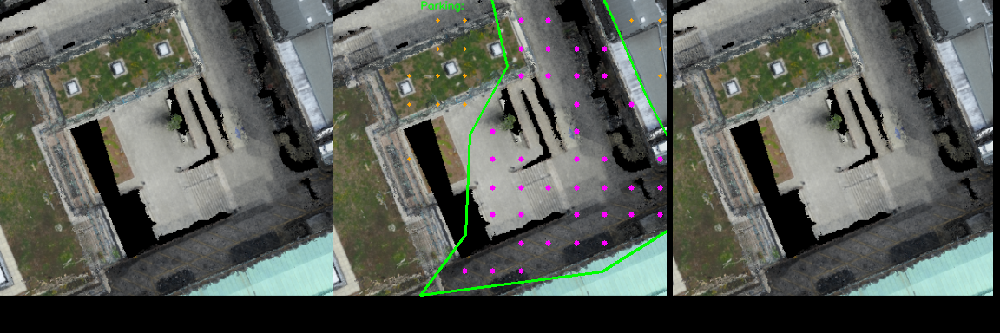
A parking area between the Downing college chapel, the Sir William Hardy building, the Geography building, the Maitland Robinson Library and the Butterfield Cafe
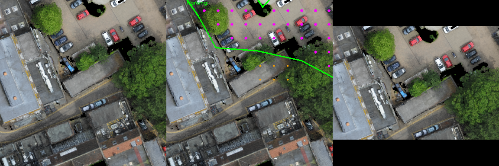
A large Sports field on top of a large field of grass next to a multicolored Brown, blue, green and gray building with a gray roof, off the Oscott Gardens Road
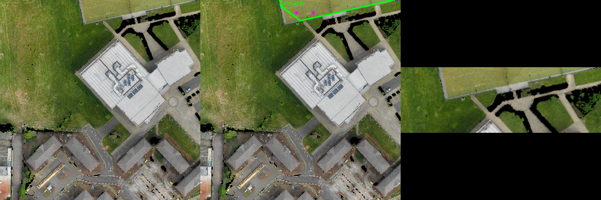
The large green rectangular grass lawn with a walkway around it by the Chapel building.
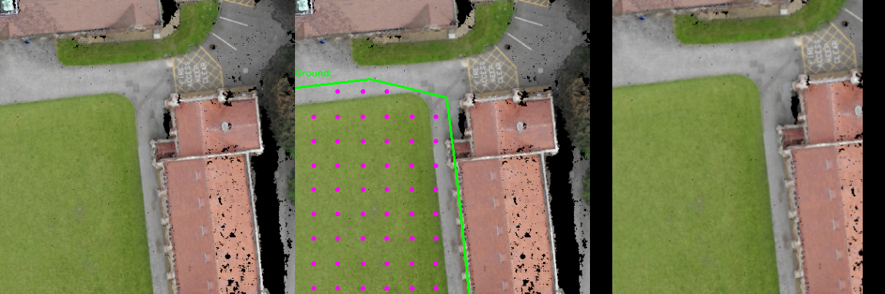
A strip of grass on the other side of the sidewalk that runs beside Wesley Methodist Church. There is a blue arched saint shrine on the side of this grassy strip.
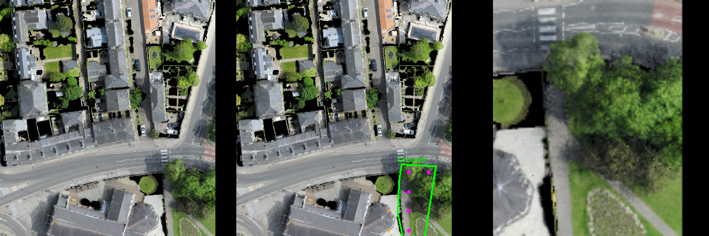